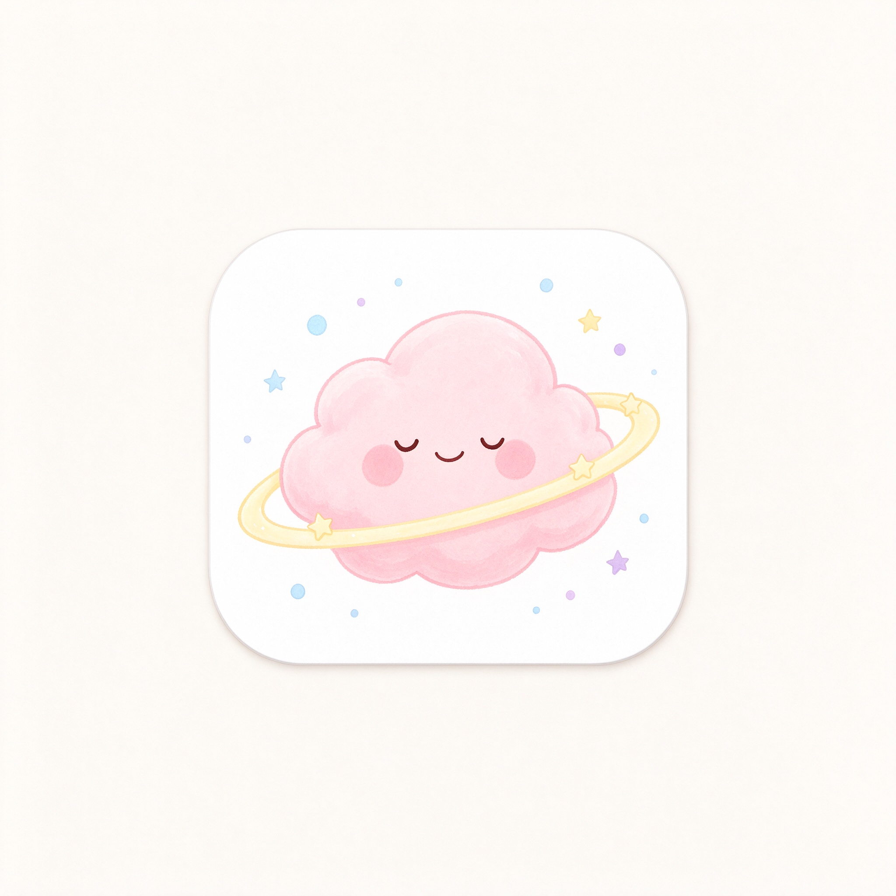

ADHD 互助小站 · 免费 CBT
注意力不集中不是你的错，这只是大脑的「运行方式」不同。
慢慢来，你已经做得很好了。🌱
当你陷入负面情绪时，写下情境、自动想法，再找一个更平衡的视角。
焦虑时，说出你能感受到的：
ADHD 是一种神经发育差异，不是「懒」或「不努力」。患者大脑的多巴胺调节方式不同，导致注意力、冲动控制和执行功能上的挑战。
ADHD 大脑对「未来奖励」不敏感，却对「即时刺激」非常敏感。所以刷手机立刻爽，而写作业的回报要很久以后——这是神经化学差异，不是意志力问题。
CBT 帮助你识别「我永远做不好」这类自动负面想法，用更平衡的视角替代它。配合外部结构（清单、定时器、环境设计），可以大幅减少内在混乱。
① 把大任务拆成 15 分钟就能启动的小步；② 用手机白噪音屏蔽环境干扰；③ 任务一开始就告诉自己「只做 5 分钟」；④ 完成就给自己一个即时小奖励。
本应用仅作日常自助辅助。如果你被诊断或怀疑 ADHD，请前往正规医院精神科/心理科就诊，由医生判断是否需要药物或专业治疗。
这个小站的起点，是一位 ADHD 母亲的提问：「国内为什么没有一个认真做 ADHD 认知行为疗法（CBT）的自助网站？」
我们想认真对待「认真」这两个字。
CBT 是目前 ADHD 非药物干预中研究证据最充分的方法之一。它的基本假设是：想法、情绪与行为互相影响；通过记录自动思维、检验证据、建立平衡视角，可以切实改善情绪与执行功能。
本应用里的每一个练习——思维记录表、番茄钟、5-4-3-2-1 接地技术——都来自临床心理学的标准方法，而不是某个人的「心灵感悟」。这里没有量子疗愈、频率共振，或任何听起来厉害却无法检验的东西。
它有明确的神经科学基础：多巴胺与去甲肾上腺素的调节差异、前额叶执行功能网络的工作方式不同。「拖延」不是懒，「分心」不是不努力。理解机制，是改变的第一步。
克鲁泡特金不仅是无政府主义思想家，也是一位地理学家与博物学家。他在《互助论》中用大量动物学与人类学观察指出：合作，而非单纯的竞争，才是物种存续与演化的重要因素。
这个小站是这一观点的微小实践：一个人把自己验证有用的工具公开出来——免费、无广告、不追踪，任何人都可以拿去用、转给需要的人。你的所有记录只存在自己的浏览器里，不上传、不变现。
本应用是日常自助工具，不能替代精神科诊断与专业治疗。如果你正被 ADHD 困扰，请前往正规医院就诊。科学精神也包括：诚实地承认自己能做什么、不能做什么。
—— 一个 ADHD 左派女程序员，写于科学季